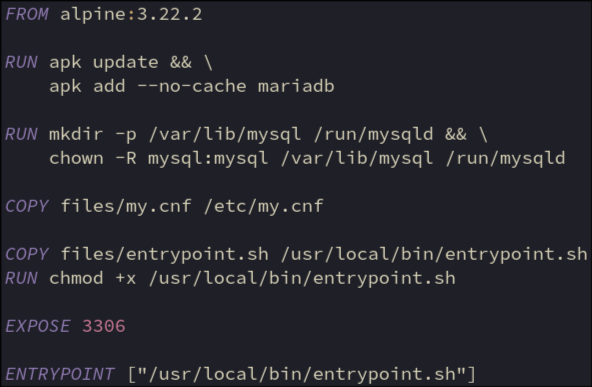

Update package lists
mariadb = core database functionality
Create required directories for mariadb and set owner as mysql user
/var/lib/mysql = database storage (host mount)
/run/mysqld = unix socket for local connections
Copy mariadb config to container
Copy entrypoint script to container
Make entrypoint.sh executable
The port that mariadb & wordpress will communicate via
The script that will run when the container is started